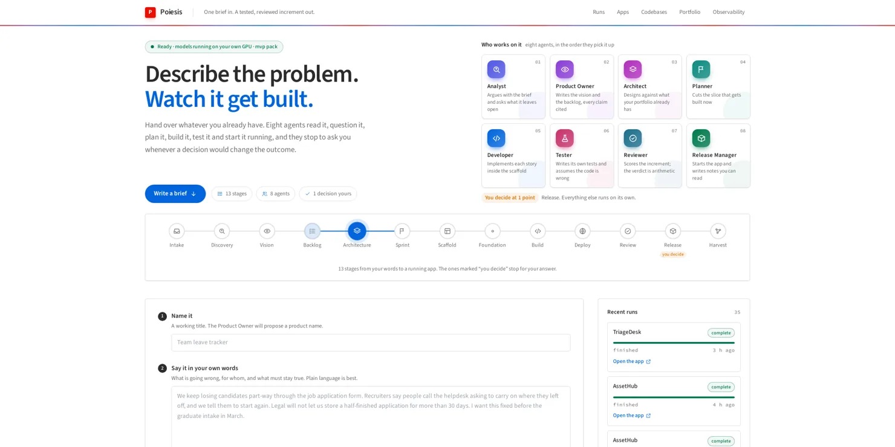

Describe the problem.
Watch it get built.
Poiesis takes whatever a stakeholder already has — a requirements document, a whiteboard photo, a recorded call, three lines of text — and ten AI agents turn it into a deployed, browser-verified application. People decide at typed gates. Everything else runs on its own, with an audit trail back to the sentence that asked for it.
A replay of the actual event log of the DupeGuard run — 1 h 52 min on a laptop GPU, compressed to a minute.
The expensive part was never the typing.
An organisation with good engineers still loses most of its cycle time before anyone writes code: turning intent into something buildable, finding out what already exists, agreeing what "done" means, and getting a decision when the answer is genuinely ambiguous.
One user
The business stakeholder. There is no product-owner, scrum-master or engineer seat: if a role is needed, it is an agent, and its output is an artifact the stakeholder can read.
Reuse is enforced, not suggested
The Architect cannot design until it has asked the knowledge graph what exists — and must justify, in writing, every "build new". That rationale is stored and surfaces on the next run.
Verified, not just tested
Every increment is deployed and every screen opened — and used — in a real browser before a person sees the release decision. The release gate cannot offer "release" for an app that is not proven working.
A value stream of thirteen stages.
Click a stage. Each is a node in a LangGraph graph checkpointed in Postgres, so a run can sit paused on a gate for a week, survive a restart, and resume at the exact node.
Ten agents. One job each.
Each has one system prompt and a typed output. On local models every reply is decoded against its JSON Schema, so "the model returned malformed JSON" is not a failure mode. Hover or tap a card to see what each one refuses to do.
People at typed gates, not in every token.
A gate has a kind, a schema, a stated default and a recorded answer with an actor. Which gates stop for a person is policy in a domain pack, so the same engine runs at different levels of autonomy. Switch packs:
The verdict is arithmetic
The Reviewer scores five weighted dimensions; shipping is the score against the threshold plus a blocker check — not the model's opinion.
Nine layers between a model's code and your decision.
A story is not trusted because the model says it is done, nor because its own tests pass. Each finding goes back to the Developer as an instruction naming the file and what to do.
Built from parts you can inspect.
Hover or tap any box. Three views: the platform, the application it generates, and the loop that makes every run better than the last.
A control room for the whole value stream.
Real screenshots from a local installation — the console, and the application it built.

DupeGuard: a 4,000-word BRD to a working app.
A support desk loses a quarter of Tier 1 capacity to duplicate tickets. The BRD asked for duplicates to be detected as they arrive, the obvious ones closed with a reply naming the original, uncertain ones reviewed, outage clusters turned into known issues that deflect new reports — and every automatic action recorded and reversible.
The run, stage by stage
Minutes from submission, from the run's event log.
Found What the run got wrong
- Two red stories were the platform's fault. A screen's own
confirm()was taken for the browser dialog; an endpoint that needs input was called bare and its correct 422 read as a crash. Both checks are fixed and covered by self-tests. - The screens worked; the rules didn't. Three stories each implemented the BRD's duplicate score differently, because each story is built in its own context. Precision was simulated.
- The data was thin — no product areas, no customers, every ticket P3 — so the rules had nothing to show.
Changed What was done about it
- One duplicate engine with the BRD's 55/20/15/10 score, its reasons, and every rule — P1s never auto-closed, chains to the earliest original, known issues linking outage reports.
- 30 days of history replayed through that engine: a Manchester outage, a billing run, chasers, known issues deflecting, six closures undone — and 22 fresh tickets for a live "Scan now".
- Honest numbers: precision counts every undone closure; a threshold change is previewed before it is saved.
Shared rules need one home
The foundation stage should write the domain module the stories import.
Checks must be fair
A finding must name something the Developer can change.
A working screen is not a working rule
Acceptance criteria with numbers should run against the app.
Replay, don't list
Data generated by the app's own rules is consistent everywhere.
Your brief never leaves the machine.
On the local profile every agent runs on Ollama on your own GPU. Replies are constrained to each agent's schema at decode time, and one gate lets the model answer one call at a time — a build, a reseed and a code-map explanation never compete for the card.
- No brief, document or line of generated code sent to a hosted model
- Every model call kept with its prompt, reply and timing — a run's cost is a query
- Hosted profiles (
cloud,groq) are one setting away when quality matters more than sovereignty - Generated apps bind to 127.0.0.1: model-written code stays off the network
The reference machine
One model loaded, weights split across the card and system RAM, 1.5 GB kept free for the display driver.
Open, inspectable, replaceable.
From clone to your first run.
Windows with Docker Desktop, WSL2 and an NVIDIA GPU is the reference setup. Expect about 55 GB of models the first time.
1Clone and configure
Point the sandbox at your workspaces folder as Windows sees it.
2Start the models and the platform
The script starts Ollama with the settings Poiesis needs.
3Submit a brief
Open the control room, describe the problem, attach the sample BRD.
4Optional: boards in Plane
Every idea becomes a project and board in a self-hosted tracker.